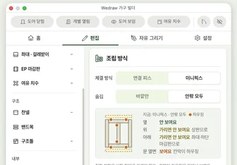
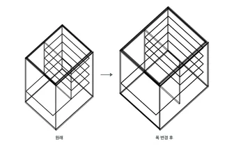
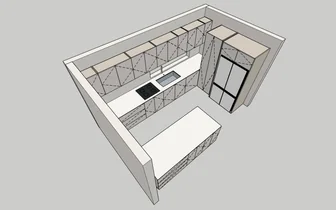
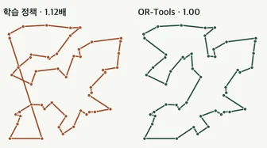
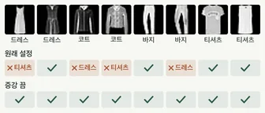

면마다 가공 특징을 붙입니다
면 단위로 예측한 결과를 포켓, 카운터보어, 구멍, 단차, 필렛으로 묶습니다.
이 흐름의 실제 프로젝트- 1포켓면 9개
- 2카운터보어2곳
- 3관통 구멍4곳
- 4단차면 2개
- 5필렛R12 · 4곳
- 도면
- A-01
- 이름
- 포켓·단차 블록
- 단계
- 02 특징 인식
- 단위
- mm
- 작성
- 김규태
- 갱신

지금 팀과 만드는 제품 · 진행 중Wedraw Pro
디자이너는 가구빌더로 설계하고, 제조 담당자는 커넥터로 생산 데이터를 받습니다
- 가구빌더 설계
- 도면·발주
- 커넥터 출력
- 생산 투입
 제품 화면3D 모델을 읽고 가공 전략까지 설계하는 AI3D 모델에서 가공 특징을 찾아 Fusion CAM 공정을 자동으로 만듭니다9종식별하는 가공 피쳐 · 스톡 포함
제품 화면3D 모델을 읽고 가공 전략까지 설계하는 AI3D 모델에서 가공 특징을 찾아 Fusion CAM 공정을 자동으로 만듭니다9종식별하는 가공 피쳐 · 스톡 포함
연구 렌더가구 패널을 인식해 크기 변경을 계산하는 AI가구 크기를 바꾸면 패널이 규칙대로 함께 움직입니다15종인식하는 패널 역할
제품 화면Wedraw Pro, 가구 설계에서 생산까지디자이너의 설계가 공장의 가공 데이터가 됩니다166개데모 주방 한 채의 부품
학부연구생 때는 강화학습과 컴퓨터 비전 연구를 많이 했습니다. 코드를 공개한 세 프로젝트를 골라 무엇을 만들었고 어디서 막혔는지 적었습니다.

강화학습으로 TSP 경로를 만드는 그래프 모델도시를 그래프로 표현하고, 다음에 갈 도시를 강화학습으로 고르게 했습니다.시행착오학습한 정책이 무작위 순서와 다르지 않았습니다2가지코드에서 찾은 실패 원인
ResNet으로 의류 사진을 분류하는 모델K-Fashion 의류 사진을 드레스, 아우터, 바지, 상의로 나누도록 학습하고 클래스별 오류를 분석했습니다.시행착오설정 오류 두 곳 때문에 정확도가 절반에 머물렀습니다48.9% → 94.4%증강만 껐을 때 정확도 인물 사진에 옷을 입혀 보는 가상 착용 앱인물 사진과 옷 사진을 올리면 옷을 갈아입힌 이미지를 돌려주는 서버와 Android 앱을 만들었습니다.시행착오옷 마스크가 배경까지 번지는 원인을 찾았습니다13 / 40벌마스크가 배경까지 번진 옷
인물 사진에 옷을 입혀 보는 가상 착용 앱인물 사진과 옷 사진을 올리면 옷을 갈아입힌 이미지를 돌려주는 서버와 Android 앱을 만들었습니다.시행착오옷 마스크가 배경까지 번지는 원인을 찾았습니다13 / 40벌마스크가 배경까지 번진 옷
03
특허와 프로그램
04
소개

현실에 적용 가능한 AI로, 사람들의 일과 생활을 조금 더 편하게 만들고 싶습니다.
3D 모델만 보고 가공 공정을 짜 주는 AI, 가구 설계를 공장이 바로 쓰는 제조 데이터로 바꿔 주는 도구처럼 손이 많이 가던 일을 덜어 주는 기술을 만들어 왔습니다. 만든 것이 현장에서 실제로 쓰이는지, 그래서 일이 줄었는지를 가장 먼저 봅니다.
- AI
- PythonTensorFlowPyTorch그래프 신경망강화학습컴퓨터 비전
- 3D · CAD/CAM
- OpenCascadeSTEPAutodesk Fusion APICAM
- 제품 개발
- SketchUp Ruby APIJavaScriptFlask
AI·CAD/CAM 개발자 채용이나 제조 소프트웨어 협업을 검토하신다면, 프로젝트별 담당 역할과 검증 결과를 확인해 주세요. Python 기반 AI 연구, CAD 형상 분석, CAM 공정 생성과 가구 제조 데이터 개발 경험을 소개합니다.
채용·제조 기술 협업 문의